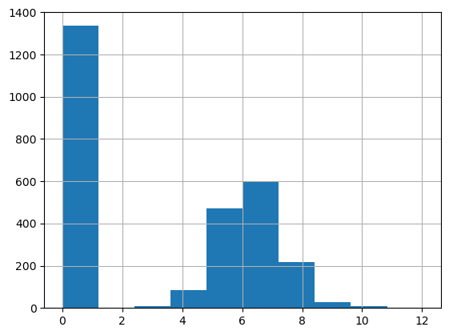

import pandas as pd
import numpy as np
import random
from ucimlrepo import fetch_ucirepo
import boto3
import json
from tqdm.auto import tqdm
import time
from sklearn.model_selection import train_test_split
from autogluon.tabular import TabularDataset, TabularPredictor
from sklearn.metrics import mean_squared_error, mean_absolute_error, r2_score, median_absolute_error
from scipy.stats import pearsonr
def calculate_regression_metrics(y_true, y_pred):
return {
'root_mean_squared_error': np.sqrt(mean_squared_error(y_true, y_pred)),
'mean_squared_error': mean_squared_error(y_true, y_pred),
'mean_absolute_error': mean_absolute_error(y_true, y_pred),
'r2': r2_score(y_true, y_pred),
'pearsonr': pearsonr(y_true, y_pred)[0], # Pearson correlation coefficient
'median_absolute_error': median_absolute_error(y_true, y_pred)
}
def string_to_yearmon(date):
date = date.split()
date = date[0].split('/') + date[1].split(':')
date = date[2] + '-' + date[0].zfill(2) #+ '-' + date[1].zfill(2) + ' ' + date[3].zfill(2) + ':' + date[4].zfill(2)
return date
def call_llama(system_prompt, input):
template = f"""<s>[INST] <<SYS>>{system_prompt}<</SYS>>{input}[/INST]"""
client = boto3.client(service_name='bedrock-runtime',region_name='us-west-2')
body = json.dumps({
"prompt": template,
"temperature": 0.,
"top_p": 0.9,
"max_gen_len": 2048,
})
response = client.invoke_model(
body=body,
modelId='us.meta.llama3-2-90b-instruct-v1:0',
accept='application/json',
contentType='application/json'
)
response_body = json.loads(response['body'].read())
return response_body
def call_claude(system_prompt, input):
client = boto3.client(service_name='bedrock-runtime',region_name='us-west-2')
body=json.dumps(
{
"anthropic_version": "bedrock-2023-05-31",
"max_tokens": 2048,
"messages": [
{
"role": "user",
"content": [
{
"type": "text",
"text": system_prompt + '\n' + input,
}
]
}
]
}
)
response = client.invoke_model(body=body,
modelId='anthropic.claude-3-5-sonnet-20241022-v2:0',
contentType='application/json',
accept='application/json')
response_body = json.loads(response.get('body').read())
return response_bodyPredict Zero-inflated and Long-tailed Outcomes
Load Dataset
Clean Dataset
online_retail = fetch_ucirepo(id=352)
transaction_df = online_retail['data']['original']
transaction_df.shape(541909, 8)#create yearmon for train-valid split
transaction_df['yearmon'] = transaction_df.InvoiceDate.map(string_to_yearmon)
#get rid of transactions without cid
transaction_df = transaction_df[~transaction_df.CustomerID.isna()].reset_index(drop=True)
#fill in unknown descriptions
transaction_df.Description = transaction_df.Description.fillna('UNKNOWN')
#convert customer id to string
transaction_df['CustomerID'] = transaction_df['CustomerID'].map(lambda x: str(int(x)))
transaction_df.shape(406829, 9)#check if still na
transaction_df.isna().mean()InvoiceNo 0.0
StockCode 0.0
Description 0.0
Quantity 0.0
InvoiceDate 0.0
UnitPrice 0.0
CustomerID 0.0
Country 0.0
yearmon 0.0
dtype: float64#simplify by filtering unit price and quantity to be non-zero (get rid of discounts, cancellations, etc)
transaction_df = transaction_df[(transaction_df.UnitPrice>0)&\
(transaction_df.Quantity>0)].reset_index(drop=True)
#add sales
transaction_df['Sales'] = transaction_df.UnitPrice * transaction_df.Quantity
transaction_df.shape(397884, 10)Outcome
feature_period = {'start': '2011-01', 'end': '2011-09'}
outcome_period = {'start': '2011-10', 'end': '2011-12'}
feature_transaction = transaction_df[(transaction_df.yearmon>=feature_period['start'])&\
(transaction_df.yearmon<=feature_period['end'])]
outcome_transaction = transaction_df[(transaction_df.yearmon>=outcome_period['start'])&\
(transaction_df.yearmon<=outcome_period['end'])]
feature_transaction.shape, outcome_transaction.shape((240338, 10), (131389, 10))#aggregate sales during outcome period
outcome_sales = outcome_transaction.groupby('CustomerID').Sales.sum().reset_index()
outcome_sales| CustomerID | Sales | |
|---|---|---|
| 0 | 12347 | 1519.14 |
| 1 | 12349 | 1757.55 |
| 2 | 12352 | 311.73 |
| 3 | 12356 | 58.35 |
| 4 | 12357 | 6207.67 |
| ... | ... | ... |
| 2555 | 18276 | 335.86 |
| 2556 | 18277 | 110.38 |
| 2557 | 18282 | 77.84 |
| 2558 | 18283 | 974.21 |
| 2559 | 18287 | 1072.00 |
2560 rows × 2 columns
#aggregate sales during feature period
feature_sales = feature_transaction.groupby('CustomerID').Sales.sum().reset_index()
feature_sales| CustomerID | Sales | |
|---|---|---|
| 0 | 12346 | 77183.60 |
| 1 | 12347 | 2079.07 |
| 2 | 12348 | 904.44 |
| 3 | 12350 | 334.40 |
| 4 | 12352 | 2194.31 |
| ... | ... | ... |
| 3433 | 18280 | 180.60 |
| 3434 | 18281 | 80.82 |
| 3435 | 18282 | 100.21 |
| 3436 | 18283 | 1120.67 |
| 3437 | 18287 | 765.28 |
3438 rows × 2 columns
#merge to get TargetSales including those who spent during feature period but not during outcome (zeroes)
outcome_df = feature_sales[['CustomerID']].merge(outcome_sales, on='CustomerID', how='left')
outcome_df['Sales'] = outcome_df['Sales'].fillna(0)
outcome_df.columns = ['CustomerID', 'TargetSales']
outcome_df| CustomerID | TargetSales | |
|---|---|---|
| 0 | 12346 | 0.00 |
| 1 | 12347 | 1519.14 |
| 2 | 12348 | 0.00 |
| 3 | 12350 | 0.00 |
| 4 | 12352 | 311.73 |
| ... | ... | ... |
| 3433 | 18280 | 0.00 |
| 3434 | 18281 | 0.00 |
| 3435 | 18282 | 77.84 |
| 3436 | 18283 | 974.21 |
| 3437 | 18287 | 1072.00 |
3438 rows × 2 columns
#confirm zero-inflated, long-tailed
outcome_df.TargetSales.describe(percentiles=[i/10 for i in range(10)])count 3438.000000
mean 666.245829
std 4016.843037
min 0.000000
0% 0.000000
10% 0.000000
20% 0.000000
30% 0.000000
40% 0.000000
50% 102.005000
60% 263.006000
70% 425.790000
80% 705.878000
90% 1273.611000
max 168469.600000
Name: TargetSales, dtype: float64#confirm zero-inflated, long-tailed
outcome_df[outcome_df.TargetSales<=10_000].TargetSales.hist(bins=100)
Feature
Classify Description into Category
feature_transaction.Description.nunique()3548Get Category
descriptions = feature_transaction.Description.unique().tolist()
print(descriptions[:5])
#randomize descriptions with seed 112 to get which categories we should use
np.random.seed(112)
random_descriptions = np.random.choice(descriptions, 1000, replace=False)
print(random_descriptions[:5])['JUMBO BAG PINK POLKADOT', 'BLUE POLKADOT WRAP', 'RED RETROSPOT WRAP ', 'RECYCLING BAG RETROSPOT ', 'RED RETROSPOT SHOPPER BAG']
['MODERN FLORAL STATIONERY SET' 'PURPLE BERTIE GLASS BEAD BAG CHARM'
'PARTY INVITES SPACEMAN' 'MONTANA DIAMOND CLUSTER EARRINGS'
'SKULLS DESIGN COTTON TOTE BAG']# res = call_llama(
# 'You are a product categorization assistant at a retail website.',
# 'Given the following product descriptions, come up with a few product categories they should be classified into.'+'\n'.join(random_descriptions)
# )
# print(res['generation'])# res# res = call_claude(
# 'You are a product categorization assistant at a retail website.',
# 'Given the following product descriptions, come up with a few product categories they should be classified into.'+'\n'.join(random_descriptions)
# )
# print(res['content'][0]['text'])# resLLaMA 3.2 90B Output:
<<SYS>>Based on the product descriptions, I would categorize them into the following categories:
1. Home Decor:
* Wall art
* Decorative items (e.g. vases, figurines, etc.)
* Lighting (e.g. candles, lanterns, etc.)
* Textiles (e.g. throw pillows, blankets, etc.)
2. Kitchen and Dining:
* Cookware and utensils
* Tableware (e.g. plates, cups, etc.)
* Kitchen decor (e.g. signs, magnets, etc.)
* Food and drink items (e.g. tea, coffee, etc.)
3. Fashion and Accessories:
* Jewelry (e.g. necklaces, earrings, etc.)
* Handbags and wallets
* Clothing and accessories (e.g. scarves, hats, etc.)
4. Stationery and Gifts:
* Cards and gift wrap
* Stationery (e.g. notebooks, pens, etc.)
* Gift items (e.g. mugs, keychains, etc.)
5. Toys and Games:
* Toys (e.g. stuffed animals, puzzles, etc.)
* Games and puzzles
6. Seasonal and Holiday:
* Christmas decorations and gifts
* Easter decorations and gifts
* Other seasonal items (e.g. Halloween, etc.)
7. Personal Care and Wellness:
* Beauty and personal care items (e.g. skincare, haircare, etc.)
* Wellness and self-care items (e.g. essential oils, etc.)
8. Outdoor and Garden:
* Garden decor and accessories
* Outdoor furniture and decor
* Gardening tools and supplies
Note that some products may fit into multiple categories, but I have assigned them to the one that seems most relevant.Claude 3.5 v2 Output
Based on these product descriptions, I would suggest the following main product categories:
1. Home Decor
- Candle holders
- Picture frames
- Wall art & signs
- Clocks
- Cushions & covers
- Storage items
- Decorative objects
2. Jewelry & Accessories
- Necklaces
- Bracelets
- Earrings
- Hair accessories
- Bag charms
- Key rings
3. Garden & Outdoor
- Plant pots
- Garden tools
- Outdoor decorations
- Bird houses
- Garden markers
4. Kitchen & Dining
- Tea sets
- Mugs
- Kitchen storage
- Cutlery
- Baking accessories
- Tea towels
5. Stationery & Paper Goods
- Notebooks
- Gift wrap
- Cards
- Paper decorations
- Writing sets
6. Party & Celebrations
- Party supplies
- Gift bags
- Christmas decorations
- Easter items
- Birthday items
7. Children's Items
- Toys
- Children's tableware
- School supplies
- Kids' accessories
8. Fashion Accessories
- Bags
- Purses
- Scarves
- Travel accessories
9. Bath & Beauty
- Bathroom accessories
- Toiletry bags
- Beauty items
10. Lighting
- Lamps
- String lights
- Tea lights
- Lanterns
These categories cover the main types of products in the list while providing logical groupings for customers to browse.categories = [
'Home Decor',
'Kitchen and Dining',
'Fashion Accessories',
'Stationary and Gifts',
'Toys and Games',
'Seasonal and Holiday',
'Personal Care and Wellness',
'Outdoor and Garden',
]
len(categories)8Annotate Category to Description
# #loop through descriptions in batches of batch_size
# res_texts = []
# batch_size = 100
# for i in tqdm(range(0, len(descriptions), batch_size)):
# batch = descriptions[i:i+batch_size]
# d = "\n".join(batch)
# inp = f'''Categorize the following product descriptions into {", ".join(categories)} or Others, if they do not fall into any.
# Only answer in the following format:
# "product description of product #1"|"product category classified into"
# "product description of product #2"|"product category classified into"
# ...
# "product description of product #n"|"product category classified into"
# Here are the product descriptions:
# {d}
# '''
# while True:
# res = call_claude('You are a product categorizer at a retail website', inp)
# # if res['generation_token_count'] > 1: #for llama
# if res['usage']['output_tokens'] > 1:
# break
# else:
# print('Retrying...')
# time.sleep(2)
# res_text = res['content'][0]['text'].strip().split('\n')
# #for llama
# # .replace('[SYS]','').replace('<<SYS>>','')\
# # .replace('[/SYS]','').replace('<</SYS>>','')\
# if res_text!='':
# res_texts.extend(res_text)# with open('../data/sales_prediction/product_description_category.csv','w') as f:
# f.write('"product_description"|"category"\n')
# for i in res_texts:
# f.write(f'{i}\n')product_description_category = pd.read_csv('../data/sales_prediction/product_description_category.csv',
sep='|')
#clean product_description
product_description_category['Description'] = descriptions
product_description_category.category.value_counts(normalize=True)category
Home Decor 0.328636
Kitchen and Dining 0.195885
Fashion Accessories 0.138670
Stationary and Gifts 0.116122
Seasonal and Holiday 0.087373
Personal Care and Wellness 0.047351
Toys and Games 0.045096
Outdoor and Garden 0.032976
Others 0.007892
Name: proportion, dtype: float64feature_transaction_cat = feature_transaction.merge(product_description_category,
how='inner',
on = 'Description',)
feature_transaction.shape, feature_transaction_cat.shape((240338, 10), (240338, 12))RFM
#convert invoice date to datetime
feature_transaction_cat['InvoiceDate'] = pd.to_datetime(feature_transaction_cat['InvoiceDate'])
# last date in feature set
current_date = feature_transaction_cat['InvoiceDate'].max()
#rfm
customer_features = feature_transaction_cat.groupby('CustomerID').agg({
'InvoiceDate': [
('recency', lambda x: (current_date - x.max()).days),
('first_purchase_date', 'min'),
('purchase_day', 'nunique'),
],
'InvoiceNo': [('nb_invoice', 'nunique')],
'Sales': [
('total_sales', 'sum')
],
'StockCode': [('nb_product', 'nunique')],
'category': [('nb_category', 'nunique')]
}).reset_index()
# Flatten column names
customer_features.columns = [
'CustomerID',
'recency',
'first_purchase_date',
'purchase_day',
'nb_invoice',
'total_sales',
'nb_product',
'nb_category'
]#almost always one purchase a day
(customer_features.purchase_day==customer_features.nb_invoice).mean()0.977021524141943customer_features['customer_lifetime'] = (current_date - customer_features['first_purchase_date']).dt.days
customer_features['avg_purchase_frequency'] = customer_features['customer_lifetime'] / customer_features['purchase_day']
customer_features['avg_purchase_value'] = customer_features['total_sales'] / customer_features['purchase_day']Category Preference
#category preference
category_sales = feature_transaction_cat.pivot_table(
values='Sales',
index='CustomerID',
columns='category',
aggfunc='sum',
fill_value=0
)
category_sales.columns = [i.lower().replace(' ','_') for i in category_sales.columns]
customer_features = customer_features.merge(category_sales, on='CustomerID', how='left')
total_sales = customer_features['total_sales']
for col in category_sales.columns:
percentage_col = f'per_{col}'
customer_features[percentage_col] = customer_features[col] / total_sales#make sure the categories are not too sparse
(customer_features.iloc[:,-9:]==0).mean()per_fashion_accessories 0.409831
per_home_decor 0.081734
per_kitchen_and_dining 0.122455
per_others 0.765561
per_outdoor_and_garden 0.507853
per_personal_care_and_wellness 0.448226
per_seasonal_and_holiday 0.369401
per_stationary_and_gifts 0.305410
per_toys_and_games 0.487202
dtype: float64Putting Them All Together
selected_features = [
'recency',
'purchase_day',
'total_sales',
'nb_product',
'nb_category',
'customer_lifetime',
'avg_purchase_frequency',
'avg_purchase_value',
'per_fashion_accessories',
'per_home_decor',
'per_kitchen_and_dining',
'per_others',
'per_outdoor_and_garden',
'per_personal_care_and_wellness',
'per_seasonal_and_holiday',
'per_stationary_and_gifts',
'per_toys_and_games']
outcome_variable = 'TargetSales'customer_features = customer_features[[ 'CustomerID']+selected_features]
customer_features.head()| CustomerID | recency | purchase_day | total_sales | nb_product | nb_category | customer_lifetime | avg_purchase_frequency | avg_purchase_value | per_fashion_accessories | per_home_decor | per_kitchen_and_dining | per_others | per_outdoor_and_garden | per_personal_care_and_wellness | per_seasonal_and_holiday | per_stationary_and_gifts | per_toys_and_games | |
|---|---|---|---|---|---|---|---|---|---|---|---|---|---|---|---|---|---|---|
| 0 | 12346 | 255 | 1 | 77183.60 | 1 | 1 | 255 | 255.000000 | 77183.600000 | 0.000000 | 0.000000 | 1.000000 | 0.000000 | 0.000000 | 0.000000 | 0.000000 | 0.000000 | 0.000000 |
| 1 | 12347 | 59 | 4 | 2079.07 | 65 | 7 | 247 | 61.750000 | 519.767500 | 0.145834 | 0.204168 | 0.294021 | 0.000000 | 0.005628 | 0.147614 | 0.000000 | 0.073013 | 0.129721 |
| 2 | 12348 | 5 | 3 | 904.44 | 10 | 4 | 248 | 82.666667 | 301.480000 | 0.000000 | 0.000000 | 0.000000 | 0.132679 | 0.000000 | 0.825970 | 0.018796 | 0.022555 | 0.000000 |
| 3 | 12350 | 239 | 1 | 334.40 | 17 | 7 | 239 | 239.000000 | 334.400000 | 0.240431 | 0.202751 | 0.116926 | 0.172548 | 0.000000 | 0.118421 | 0.000000 | 0.059211 | 0.089713 |
| 4 | 12352 | 2 | 7 | 2194.31 | 47 | 8 | 226 | 32.285714 | 313.472857 | 0.000000 | 0.196531 | 0.246187 | 0.474090 | 0.013535 | 0.016680 | 0.008066 | 0.024404 | 0.020508 |
Merge Features and Outcome
customer_features.shape, outcome_df.shape((3438, 18), (3438, 2))df = outcome_df.merge(customer_features, on='CustomerID').drop('CustomerID', axis=1)
df.shape(3438, 18)#correlations
df.iloc[:,1:].corr()| recency | purchase_day | total_sales | nb_product | nb_category | customer_lifetime | avg_purchase_frequency | avg_purchase_value | per_fashion_accessories | per_home_decor | per_kitchen_and_dining | per_others | per_outdoor_and_garden | per_personal_care_and_wellness | per_seasonal_and_holiday | per_stationary_and_gifts | per_toys_and_games | |
|---|---|---|---|---|---|---|---|---|---|---|---|---|---|---|---|---|---|
| recency | 1.000000 | -0.299308 | -0.132344 | -0.287415 | -0.326772 | 0.298853 | 0.893973 | 0.008823 | -0.020861 | 0.022013 | 0.057244 | -0.016069 | 0.071268 | -0.082792 | -0.085681 | -0.017813 | -0.009686 |
| purchase_day | -0.299308 | 1.000000 | 0.540253 | 0.690345 | 0.304621 | 0.332109 | -0.331543 | 0.027488 | 0.030683 | 0.018684 | 0.025269 | 0.004299 | -0.019992 | -0.035665 | -0.020392 | -0.045384 | -0.028187 |
| total_sales | -0.132344 | 0.540253 | 1.000000 | 0.400467 | 0.137064 | 0.156018 | -0.148762 | 0.361138 | 0.016511 | -0.013819 | 0.047834 | 0.006398 | -0.029353 | -0.011937 | -0.016724 | -0.029181 | -0.013139 |
| nb_product | -0.287415 | 0.690345 | 0.400467 | 1.000000 | 0.555551 | 0.265594 | -0.294923 | 0.061039 | -0.003137 | -0.017516 | 0.035615 | -0.006842 | -0.026371 | -0.005309 | -0.016586 | 0.026716 | -0.010069 |
| nb_category | -0.326772 | 0.304621 | 0.137064 | 0.555551 | 1.000000 | 0.224232 | -0.321596 | 0.019955 | 0.004863 | -0.138372 | -0.039363 | 0.055555 | 0.041405 | 0.075882 | 0.015498 | 0.152869 | 0.111150 |
| customer_lifetime | 0.298853 | 0.332109 | 0.156018 | 0.265594 | 0.224232 | 1.000000 | 0.358431 | 0.014933 | 0.011220 | 0.066111 | 0.069175 | -0.019971 | 0.029726 | -0.127865 | -0.120399 | -0.050320 | -0.036484 |
| avg_purchase_frequency | 0.893973 | -0.331543 | -0.148762 | -0.294923 | -0.321596 | 0.358431 | 1.000000 | 0.009157 | -0.016093 | 0.027208 | 0.037053 | -0.027413 | 0.060369 | -0.070352 | -0.074799 | -0.000546 | -0.010612 |
| avg_purchase_value | 0.008823 | 0.027488 | 0.361138 | 0.061039 | 0.019955 | 0.014933 | 0.009157 | 1.000000 | -0.003187 | -0.056690 | 0.076862 | 0.015427 | -0.028884 | 0.004225 | -0.000200 | -0.012729 | -0.002396 |
| per_fashion_accessories | -0.020861 | 0.030683 | 0.016511 | -0.003137 | 0.004863 | 0.011220 | -0.016093 | -0.003187 | 1.000000 | -0.254015 | -0.177775 | -0.010436 | -0.082834 | -0.038493 | -0.124719 | -0.068166 | -0.051486 |
| per_home_decor | 0.022013 | 0.018684 | -0.013819 | -0.017516 | -0.138372 | 0.066111 | 0.027208 | -0.056690 | -0.254015 | 1.000000 | -0.481983 | -0.155784 | -0.080637 | -0.158837 | -0.165964 | -0.262313 | -0.245759 |
| per_kitchen_and_dining | 0.057244 | 0.025269 | 0.047834 | 0.035615 | -0.039363 | 0.069175 | 0.037053 | 0.076862 | -0.177775 | -0.481983 | 1.000000 | -0.013075 | -0.144698 | -0.117031 | -0.204235 | -0.173386 | -0.143931 |
| per_others | -0.016069 | 0.004299 | 0.006398 | -0.006842 | 0.055555 | -0.019971 | -0.027413 | 0.015427 | -0.010436 | -0.155784 | -0.013075 | 1.000000 | -0.062652 | 0.014794 | -0.047940 | -0.033975 | -0.040421 |
| per_outdoor_and_garden | 0.071268 | -0.019992 | -0.029353 | -0.026371 | 0.041405 | 0.029726 | 0.060369 | -0.028884 | -0.082834 | -0.080637 | -0.144698 | -0.062652 | 1.000000 | -0.045639 | -0.077947 | -0.057297 | -0.001034 |
| per_personal_care_and_wellness | -0.082792 | -0.035665 | -0.011937 | -0.005309 | 0.075882 | -0.127865 | -0.070352 | 0.004225 | -0.038493 | -0.158837 | -0.117031 | 0.014794 | -0.045639 | 1.000000 | -0.057926 | -0.025871 | -0.017022 |
| per_seasonal_and_holiday | -0.085681 | -0.020392 | -0.016724 | -0.016586 | 0.015498 | -0.120399 | -0.074799 | -0.000200 | -0.124719 | -0.165964 | -0.204235 | -0.047940 | -0.077947 | -0.057926 | 1.000000 | -0.019418 | -0.042970 |
| per_stationary_and_gifts | -0.017813 | -0.045384 | -0.029181 | 0.026716 | 0.152869 | -0.050320 | -0.000546 | -0.012729 | -0.068166 | -0.262313 | -0.173386 | -0.033975 | -0.057297 | -0.025871 | -0.019418 | 1.000000 | 0.172039 |
| per_toys_and_games | -0.009686 | -0.028187 | -0.013139 | -0.010069 | 0.111150 | -0.036484 | -0.010612 | -0.002396 | -0.051486 | -0.245759 | -0.143931 | -0.040421 | -0.001034 | -0.017022 | -0.042970 | 0.172039 | 1.000000 |
#target and most predictive variable
df[df.TargetSales<=25_000].plot.scatter(x='TargetSales',y='total_sales')
Train-Test Splits
#split into train-valid sets
train_df, test_df = train_test_split(df,
test_size=0.2,
random_state=112)pd.concat([train_df.TargetSales.describe(percentiles=[i/10 for i in range(10)]).reset_index(),
test_df.TargetSales.describe(percentiles=[i/10 for i in range(10)]).reset_index(),], axis=1)| index | TargetSales | index | TargetSales | |
|---|---|---|---|---|
| 0 | count | 2750.000000 | count | 688.000000 |
| 1 | mean | 642.650436 | mean | 760.558808 |
| 2 | std | 4015.305436 | std | 4024.524400 |
| 3 | min | 0.000000 | min | 0.000000 |
| 4 | 0% | 0.000000 | 0% | 0.000000 |
| 5 | 10% | 0.000000 | 10% | 0.000000 |
| 6 | 20% | 0.000000 | 20% | 0.000000 |
| 7 | 30% | 0.000000 | 30% | 0.000000 |
| 8 | 40% | 0.000000 | 40% | 0.000000 |
| 9 | 50% | 91.350000 | 50% | 113.575000 |
| 10 | 60% | 260.308000 | 60% | 277.836000 |
| 11 | 70% | 426.878000 | 70% | 418.187000 |
| 12 | 80% | 694.164000 | 80% | 759.582000 |
| 13 | 90% | 1272.997000 | 90% | 1255.670000 |
| 14 | max | 168469.600000 | max | 77099.380000 |
Baseline Regression
predictor = TabularPredictor(label='TargetSales').fit(train_df[selected_features + ['TargetSales']],
presets='medium_quality',
num_gpus=8,
excluded_model_types=['NN_TORCH','FASTAI','KNN'],
)No path specified. Models will be saved in: "AutogluonModels/ag-20241122_052014"
Verbosity: 2 (Standard Logging)
=================== System Info ===================
AutoGluon Version: 1.1.1
Python Version: 3.9.12
Operating System: Linux
Platform Machine: x86_64
Platform Version: #1 SMP Wed Oct 23 01:22:11 UTC 2024
CPU Count: 64
Memory Avail: 468.90 GB / 480.23 GB (97.6%)
Disk Space Avail: 1553.14 GB / 1968.52 GB (78.9%)
===================================================
Presets specified: ['medium_quality']
Beginning AutoGluon training ...
AutoGluon will save models to "AutogluonModels/ag-20241122_052014"
Train Data Rows: 2750
Train Data Columns: 17
Label Column: TargetSales
AutoGluon infers your prediction problem is: 'regression' (because dtype of label-column == float and many unique label-values observed).
Label info (max, min, mean, stddev): (168469.6, 0.0, 642.65044, 4015.30544)
If 'regression' is not the correct problem_type, please manually specify the problem_type parameter during Predictor init (You may specify problem_type as one of: ['binary', 'multiclass', 'regression', 'quantile'])
Problem Type: regression
Preprocessing data ...
Using Feature Generators to preprocess the data ...
Fitting AutoMLPipelineFeatureGenerator...
Available Memory: 480152.27 MB
Train Data (Original) Memory Usage: 0.36 MB (0.0% of available memory)
Inferring data type of each feature based on column values. Set feature_metadata_in to manually specify special dtypes of the features.
Stage 1 Generators:
Fitting AsTypeFeatureGenerator...
Stage 2 Generators:
Fitting FillNaFeatureGenerator...
Stage 3 Generators:
Fitting IdentityFeatureGenerator...
Stage 4 Generators:
Fitting DropUniqueFeatureGenerator...
Stage 5 Generators:
Fitting DropDuplicatesFeatureGenerator...
Types of features in original data (raw dtype, special dtypes):
('float', []) : 12 | ['total_sales', 'avg_purchase_frequency', 'avg_purchase_value', 'per_fashion_accessories', 'per_home_decor', ...]
('int', []) : 5 | ['recency', 'purchase_day', 'nb_product', 'nb_category', 'customer_lifetime']
Types of features in processed data (raw dtype, special dtypes):
('float', []) : 12 | ['total_sales', 'avg_purchase_frequency', 'avg_purchase_value', 'per_fashion_accessories', 'per_home_decor', ...]
('int', []) : 5 | ['recency', 'purchase_day', 'nb_product', 'nb_category', 'customer_lifetime']
0.0s = Fit runtime
17 features in original data used to generate 17 features in processed data.
Train Data (Processed) Memory Usage: 0.36 MB (0.0% of available memory)
Data preprocessing and feature engineering runtime = 0.06s ...
AutoGluon will gauge predictive performance using evaluation metric: 'root_mean_squared_error'
This metric's sign has been flipped to adhere to being higher_is_better. The metric score can be multiplied by -1 to get the metric value.
To change this, specify the eval_metric parameter of Predictor()
Automatically generating train/validation split with holdout_frac=0.18181818181818182, Train Rows: 2250, Val Rows: 500
User-specified model hyperparameters to be fit:
{
'NN_TORCH': {},
'GBM': [{'extra_trees': True, 'ag_args': {'name_suffix': 'XT'}}, {}, 'GBMLarge'],
'CAT': {},
'XGB': {},
'FASTAI': {},
'RF': [{'criterion': 'gini', 'ag_args': {'name_suffix': 'Gini', 'problem_types': ['binary', 'multiclass']}}, {'criterion': 'entropy', 'ag_args': {'name_suffix': 'Entr', 'problem_types': ['binary', 'multiclass']}}, {'criterion': 'squared_error', 'ag_args': {'name_suffix': 'MSE', 'problem_types': ['regression', 'quantile']}}],
'XT': [{'criterion': 'gini', 'ag_args': {'name_suffix': 'Gini', 'problem_types': ['binary', 'multiclass']}}, {'criterion': 'entropy', 'ag_args': {'name_suffix': 'Entr', 'problem_types': ['binary', 'multiclass']}}, {'criterion': 'squared_error', 'ag_args': {'name_suffix': 'MSE', 'problem_types': ['regression', 'quantile']}}],
'KNN': [{'weights': 'uniform', 'ag_args': {'name_suffix': 'Unif'}}, {'weights': 'distance', 'ag_args': {'name_suffix': 'Dist'}}],
}
Excluded models: ['FASTAI', 'KNN', 'NN_TORCH'] (Specified by `excluded_model_types`)
Fitting 7 L1 models ...
Fitting model: LightGBMXT ...
Training LightGBMXT with GPU, note that this may negatively impact model quality compared to CPU training.
[LightGBM] [Fatal] GPU Tree Learner was not enabled in this build.
Please recompile with CMake option -DUSE_GPU=1
Warning: GPU mode might not be installed for LightGBM, GPU training raised an exception. Falling back to CPU training...Refer to LightGBM GPU documentation: https://github.com/Microsoft/LightGBM/tree/master/python-package#build-gpu-versionOne possible method is: pip uninstall lightgbm -y pip install lightgbm --install-option=--gpu
-1003.3582 = Validation score (-root_mean_squared_error)
0.6s = Training runtime
0.0s = Validation runtime
Fitting model: LightGBM ...
Training LightGBM with GPU, note that this may negatively impact model quality compared to CPU training.
[LightGBM] [Fatal] GPU Tree Learner was not enabled in this build.
Please recompile with CMake option -DUSE_GPU=1
Warning: GPU mode might not be installed for LightGBM, GPU training raised an exception. Falling back to CPU training...Refer to LightGBM GPU documentation: https://github.com/Microsoft/LightGBM/tree/master/python-package#build-gpu-versionOne possible method is: pip uninstall lightgbm -y pip install lightgbm --install-option=--gpu
-928.536 = Validation score (-root_mean_squared_error)
0.6s = Training runtime
0.0s = Validation runtime
Fitting model: RandomForestMSE ...
-887.6823 = Validation score (-root_mean_squared_error)
0.8s = Training runtime
0.1s = Validation runtime
Fitting model: CatBoost ...
Training CatBoost with GPU, note that this may negatively impact model quality compared to CPU training.
Warning: CatBoost on GPU is experimental. If you encounter issues, use CPU for training CatBoost instead.
-912.3919 = Validation score (-root_mean_squared_error)
1.8s = Training runtime
0.0s = Validation runtime
Fitting model: ExtraTreesMSE ...
-974.1369 = Validation score (-root_mean_squared_error)
0.7s = Training runtime
0.09s = Validation runtime
Fitting model: XGBoost ...
/home/charipol/miniconda3/lib/python3.9/site-packages/xgboost/core.py:160: UserWarning: [05:20:19] WARNING: /workspace/src/common/error_msg.cc:27: The tree method `gpu_hist` is deprecated since 2.0.0. To use GPU training, set the `device` parameter to CUDA instead.
E.g. tree_method = "hist", device = "cuda"
warnings.warn(smsg, UserWarning)
/home/charipol/miniconda3/lib/python3.9/site-packages/xgboost/core.py:160: UserWarning: [05:20:20] WARNING: /workspace/src/common/error_msg.cc:27: The tree method `gpu_hist` is deprecated since 2.0.0. To use GPU training, set the `device` parameter to CUDA instead.
E.g. tree_method = "hist", device = "cuda"
warnings.warn(smsg, UserWarning)
-816.8577 = Validation score (-root_mean_squared_error)
1.0s = Training runtime
0.01s = Validation runtime
Fitting model: LightGBMLarge ...
Training LightGBMLarge with GPU, note that this may negatively impact model quality compared to CPU training.
[LightGBM] [Fatal] GPU Tree Learner was not enabled in this build.
Please recompile with CMake option -DUSE_GPU=1
Warning: GPU mode might not be installed for LightGBM, GPU training raised an exception. Falling back to CPU training...Refer to LightGBM GPU documentation: https://github.com/Microsoft/LightGBM/tree/master/python-package#build-gpu-versionOne possible method is: pip uninstall lightgbm -y pip install lightgbm --install-option=--gpu
-969.4897 = Validation score (-root_mean_squared_error)
1.61s = Training runtime
0.0s = Validation runtime
Fitting model: WeightedEnsemble_L2 ...
Ensemble Weights: {'XGBoost': 0.478, 'RandomForestMSE': 0.304, 'LightGBMXT': 0.217}
-766.1795 = Validation score (-root_mean_squared_error)
0.02s = Training runtime
0.0s = Validation runtime
AutoGluon training complete, total runtime = 7.61s ... Best model: WeightedEnsemble_L2 | Estimated inference throughput: 4475.4 rows/s (500 batch size)
TabularPredictor saved. To load, use: predictor = TabularPredictor.load("AutogluonModels/ag-20241122_052014")test_df['pred_baseline'] = predictor.predict(test_df[selected_features])calculate_regression_metrics(test_df['TargetSales'], test_df['pred_baseline']){'root_mean_squared_error': 3535.0456293403095,
'mean_squared_error': 12496547.601518024,
'mean_absolute_error': 733.2916506070869,
'r2': 0.22733254613537157,
'pearsonr': 0.4889487555329212,
'median_absolute_error': 351.8167266845703}Regression on Winsorized Outcome
outlier_per = 0.99
outlier_cap_train = train_df['TargetSales'].quantile(outlier_per)
outlier_cap_train7180.805199999947#winsorize
train_df['TargetSales_win'] = train_df['TargetSales'].map(lambda x: outlier_cap_train if x> outlier_cap_train else x)
test_df['TargetSales_win'] = test_df['TargetSales'].map(lambda x: outlier_cap_train if x> outlier_cap_train else x)predictor = TabularPredictor(label='TargetSales_win').fit(train_df[selected_features+['TargetSales_win']],
presets='medium_quality',
num_gpus=8,
excluded_model_types=['NN_TORCH','FASTAI','KNN'],
)No path specified. Models will be saved in: "AutogluonModels/ag-20241122_052148"
Verbosity: 2 (Standard Logging)
=================== System Info ===================
AutoGluon Version: 1.1.1
Python Version: 3.9.12
Operating System: Linux
Platform Machine: x86_64
Platform Version: #1 SMP Wed Oct 23 01:22:11 UTC 2024
CPU Count: 64
Memory Avail: 468.79 GB / 480.23 GB (97.6%)
Disk Space Avail: 1553.06 GB / 1968.52 GB (78.9%)
===================================================
Presets specified: ['medium_quality']
Beginning AutoGluon training ...
AutoGluon will save models to "AutogluonModels/ag-20241122_052148"
Train Data Rows: 2750
Train Data Columns: 17
Label Column: TargetSales_win
AutoGluon infers your prediction problem is: 'regression' (because dtype of label-column == float and many unique label-values observed).
Label info (max, min, mean, stddev): (7180.805199999947, 0.0, 474.91365, 994.46633)
If 'regression' is not the correct problem_type, please manually specify the problem_type parameter during Predictor init (You may specify problem_type as one of: ['binary', 'multiclass', 'regression', 'quantile'])
Problem Type: regression
Preprocessing data ...
Using Feature Generators to preprocess the data ...
Fitting AutoMLPipelineFeatureGenerator...
Available Memory: 480039.65 MB
Train Data (Original) Memory Usage: 0.36 MB (0.0% of available memory)
Inferring data type of each feature based on column values. Set feature_metadata_in to manually specify special dtypes of the features.
Stage 1 Generators:
Fitting AsTypeFeatureGenerator...
Stage 2 Generators:
Fitting FillNaFeatureGenerator...
Stage 3 Generators:
Fitting IdentityFeatureGenerator...
Stage 4 Generators:
Fitting DropUniqueFeatureGenerator...
Stage 5 Generators:
Fitting DropDuplicatesFeatureGenerator...
Types of features in original data (raw dtype, special dtypes):
('float', []) : 12 | ['total_sales', 'avg_purchase_frequency', 'avg_purchase_value', 'per_fashion_accessories', 'per_home_decor', ...]
('int', []) : 5 | ['recency', 'purchase_day', 'nb_product', 'nb_category', 'customer_lifetime']
Types of features in processed data (raw dtype, special dtypes):
('float', []) : 12 | ['total_sales', 'avg_purchase_frequency', 'avg_purchase_value', 'per_fashion_accessories', 'per_home_decor', ...]
('int', []) : 5 | ['recency', 'purchase_day', 'nb_product', 'nb_category', 'customer_lifetime']
0.0s = Fit runtime
17 features in original data used to generate 17 features in processed data.
Train Data (Processed) Memory Usage: 0.36 MB (0.0% of available memory)
Data preprocessing and feature engineering runtime = 0.06s ...
AutoGluon will gauge predictive performance using evaluation metric: 'root_mean_squared_error'
This metric's sign has been flipped to adhere to being higher_is_better. The metric score can be multiplied by -1 to get the metric value.
To change this, specify the eval_metric parameter of Predictor()
Automatically generating train/validation split with holdout_frac=0.18181818181818182, Train Rows: 2250, Val Rows: 500
User-specified model hyperparameters to be fit:
{
'NN_TORCH': {},
'GBM': [{'extra_trees': True, 'ag_args': {'name_suffix': 'XT'}}, {}, 'GBMLarge'],
'CAT': {},
'XGB': {},
'FASTAI': {},
'RF': [{'criterion': 'gini', 'ag_args': {'name_suffix': 'Gini', 'problem_types': ['binary', 'multiclass']}}, {'criterion': 'entropy', 'ag_args': {'name_suffix': 'Entr', 'problem_types': ['binary', 'multiclass']}}, {'criterion': 'squared_error', 'ag_args': {'name_suffix': 'MSE', 'problem_types': ['regression', 'quantile']}}],
'XT': [{'criterion': 'gini', 'ag_args': {'name_suffix': 'Gini', 'problem_types': ['binary', 'multiclass']}}, {'criterion': 'entropy', 'ag_args': {'name_suffix': 'Entr', 'problem_types': ['binary', 'multiclass']}}, {'criterion': 'squared_error', 'ag_args': {'name_suffix': 'MSE', 'problem_types': ['regression', 'quantile']}}],
'KNN': [{'weights': 'uniform', 'ag_args': {'name_suffix': 'Unif'}}, {'weights': 'distance', 'ag_args': {'name_suffix': 'Dist'}}],
}
Excluded models: ['FASTAI', 'KNN', 'NN_TORCH'] (Specified by `excluded_model_types`)
Fitting 7 L1 models ...
Fitting model: LightGBMXT ...
Training LightGBMXT with GPU, note that this may negatively impact model quality compared to CPU training.
Warning: GPU mode might not be installed for LightGBM, GPU training raised an exception. Falling back to CPU training...Refer to LightGBM GPU documentation: https://github.com/Microsoft/LightGBM/tree/master/python-package#build-gpu-versionOne possible method is: pip uninstall lightgbm -y pip install lightgbm --install-option=--gpu
[LightGBM] [Fatal] GPU Tree Learner was not enabled in this build.
Please recompile with CMake option -DUSE_GPU=1
-612.1193 = Validation score (-root_mean_squared_error)
0.71s = Training runtime
0.0s = Validation runtime
Fitting model: LightGBM ...
Training LightGBM with GPU, note that this may negatively impact model quality compared to CPU training.
[LightGBM] [Fatal] GPU Tree Learner was not enabled in this build.
Please recompile with CMake option -DUSE_GPU=1
Warning: GPU mode might not be installed for LightGBM, GPU training raised an exception. Falling back to CPU training...Refer to LightGBM GPU documentation: https://github.com/Microsoft/LightGBM/tree/master/python-package#build-gpu-versionOne possible method is: pip uninstall lightgbm -y pip install lightgbm --install-option=--gpu
-606.6121 = Validation score (-root_mean_squared_error)
0.87s = Training runtime
0.0s = Validation runtime
Fitting model: RandomForestMSE ...
-594.4683 = Validation score (-root_mean_squared_error)
0.8s = Training runtime
0.1s = Validation runtime
Fitting model: CatBoost ...
Training CatBoost with GPU, note that this may negatively impact model quality compared to CPU training.
Warning: CatBoost on GPU is experimental. If you encounter issues, use CPU for training CatBoost instead.
-569.0171 = Validation score (-root_mean_squared_error)
2.73s = Training runtime
0.0s = Validation runtime
Fitting model: ExtraTreesMSE ...
-594.7243 = Validation score (-root_mean_squared_error)
0.72s = Training runtime
0.1s = Validation runtime
Fitting model: XGBoost ...
/home/charipol/miniconda3/lib/python3.9/site-packages/xgboost/core.py:160: UserWarning: [05:21:54] WARNING: /workspace/src/common/error_msg.cc:27: The tree method `gpu_hist` is deprecated since 2.0.0. To use GPU training, set the `device` parameter to CUDA instead.
E.g. tree_method = "hist", device = "cuda"
warnings.warn(smsg, UserWarning)
/home/charipol/miniconda3/lib/python3.9/site-packages/xgboost/core.py:160: UserWarning: [05:21:55] WARNING: /workspace/src/common/error_msg.cc:27: The tree method `gpu_hist` is deprecated since 2.0.0. To use GPU training, set the `device` parameter to CUDA instead.
E.g. tree_method = "hist", device = "cuda"
warnings.warn(smsg, UserWarning)
-587.4133 = Validation score (-root_mean_squared_error)
1.11s = Training runtime
0.02s = Validation runtime
Fitting model: LightGBMLarge ...
Training LightGBMLarge with GPU, note that this may negatively impact model quality compared to CPU training.
[LightGBM] [Fatal] GPU Tree Learner was not enabled in this build.
Please recompile with CMake option -DUSE_GPU=1
Warning: GPU mode might not be installed for LightGBM, GPU training raised an exception. Falling back to CPU training...Refer to LightGBM GPU documentation: https://github.com/Microsoft/LightGBM/tree/master/python-package#build-gpu-versionOne possible method is: pip uninstall lightgbm -y pip install lightgbm --install-option=--gpu
-586.8863 = Validation score (-root_mean_squared_error)
2.03s = Training runtime
0.0s = Validation runtime
Fitting model: WeightedEnsemble_L2 ...
Ensemble Weights: {'CatBoost': 0.632, 'XGBoost': 0.263, 'RandomForestMSE': 0.105}
-563.7135 = Validation score (-root_mean_squared_error)
0.02s = Training runtime
0.0s = Validation runtime
AutoGluon training complete, total runtime = 9.55s ... Best model: WeightedEnsemble_L2 | Estimated inference throughput: 4052.1 rows/s (500 batch size)
TabularPredictor saved. To load, use: predictor = TabularPredictor.load("AutogluonModels/ag-20241122_052148")test_df['pred_winsorized'] = predictor.predict(test_df[selected_features])calculate_regression_metrics(test_df['TargetSales'], test_df['pred_winsorized']){'root_mean_squared_error': 3621.2890030725234,
'mean_squared_error': 13113734.043773992,
'mean_absolute_error': 632.4055458614438,
'r2': 0.18917161624464252,
'pearsonr': 0.5745161754376499,
'median_absolute_error': 224.00707733154297}calculate_regression_metrics(test_df['TargetSales_win'], test_df['pred_winsorized']){'root_mean_squared_error': 677.156973523447,
'mean_squared_error': 458541.5667914344,
'mean_absolute_error': 381.3935720242338,
'r2': 0.6129909348661391,
'pearsonr': 0.7834868276613383,
'median_absolute_error': 223.31085205078125}Log1p Regression
#log
train_df['TargetSales_log1p'] = train_df['TargetSales'].map(np.log1p)
test_df['TargetSales_log1p'] = test_df['TargetSales'].map(np.log1p)#from zero-inflated to one-inflated
train_df['TargetSales_log1p'].hist()
predictor = TabularPredictor(label='TargetSales_log1p').fit(train_df[selected_features+['TargetSales_log1p']],
presets='medium_quality',
num_gpus=8,
excluded_model_types=['NN_TORCH','FASTAI','KNN'],
)No path specified. Models will be saved in: "AutogluonModels/ag-20241122_052230"
Verbosity: 2 (Standard Logging)
=================== System Info ===================
AutoGluon Version: 1.1.1
Python Version: 3.9.12
Operating System: Linux
Platform Machine: x86_64
Platform Version: #1 SMP Wed Oct 23 01:22:11 UTC 2024
CPU Count: 64
Memory Avail: 468.40 GB / 480.23 GB (97.5%)
Disk Space Avail: 1552.98 GB / 1968.52 GB (78.9%)
===================================================
Presets specified: ['medium_quality']
Beginning AutoGluon training ...
AutoGluon will save models to "AutogluonModels/ag-20241122_052230"
Train Data Rows: 2750
Train Data Columns: 17
Label Column: TargetSales_log1p
AutoGluon infers your prediction problem is: 'regression' (because dtype of label-column == float and many unique label-values observed).
Label info (max, min, mean, stddev): (12.034516532838857, 0.0, 3.24748, 3.24795)
If 'regression' is not the correct problem_type, please manually specify the problem_type parameter during Predictor init (You may specify problem_type as one of: ['binary', 'multiclass', 'regression', 'quantile'])
Problem Type: regression
Preprocessing data ...
Using Feature Generators to preprocess the data ...
Fitting AutoMLPipelineFeatureGenerator...
Available Memory: 479637.48 MB
Train Data (Original) Memory Usage: 0.36 MB (0.0% of available memory)
Inferring data type of each feature based on column values. Set feature_metadata_in to manually specify special dtypes of the features.
Stage 1 Generators:
Fitting AsTypeFeatureGenerator...
Stage 2 Generators:
Fitting FillNaFeatureGenerator...
Stage 3 Generators:
Fitting IdentityFeatureGenerator...
Stage 4 Generators:
Fitting DropUniqueFeatureGenerator...
Stage 5 Generators:
Fitting DropDuplicatesFeatureGenerator...
Types of features in original data (raw dtype, special dtypes):
('float', []) : 12 | ['total_sales', 'avg_purchase_frequency', 'avg_purchase_value', 'per_fashion_accessories', 'per_home_decor', ...]
('int', []) : 5 | ['recency', 'purchase_day', 'nb_product', 'nb_category', 'customer_lifetime']
Types of features in processed data (raw dtype, special dtypes):
('float', []) : 12 | ['total_sales', 'avg_purchase_frequency', 'avg_purchase_value', 'per_fashion_accessories', 'per_home_decor', ...]
('int', []) : 5 | ['recency', 'purchase_day', 'nb_product', 'nb_category', 'customer_lifetime']
0.1s = Fit runtime
17 features in original data used to generate 17 features in processed data.
Train Data (Processed) Memory Usage: 0.36 MB (0.0% of available memory)
Data preprocessing and feature engineering runtime = 0.09s ...
AutoGluon will gauge predictive performance using evaluation metric: 'root_mean_squared_error'
This metric's sign has been flipped to adhere to being higher_is_better. The metric score can be multiplied by -1 to get the metric value.
To change this, specify the eval_metric parameter of Predictor()
Automatically generating train/validation split with holdout_frac=0.18181818181818182, Train Rows: 2250, Val Rows: 500
User-specified model hyperparameters to be fit:
{
'NN_TORCH': {},
'GBM': [{'extra_trees': True, 'ag_args': {'name_suffix': 'XT'}}, {}, 'GBMLarge'],
'CAT': {},
'XGB': {},
'FASTAI': {},
'RF': [{'criterion': 'gini', 'ag_args': {'name_suffix': 'Gini', 'problem_types': ['binary', 'multiclass']}}, {'criterion': 'entropy', 'ag_args': {'name_suffix': 'Entr', 'problem_types': ['binary', 'multiclass']}}, {'criterion': 'squared_error', 'ag_args': {'name_suffix': 'MSE', 'problem_types': ['regression', 'quantile']}}],
'XT': [{'criterion': 'gini', 'ag_args': {'name_suffix': 'Gini', 'problem_types': ['binary', 'multiclass']}}, {'criterion': 'entropy', 'ag_args': {'name_suffix': 'Entr', 'problem_types': ['binary', 'multiclass']}}, {'criterion': 'squared_error', 'ag_args': {'name_suffix': 'MSE', 'problem_types': ['regression', 'quantile']}}],
'KNN': [{'weights': 'uniform', 'ag_args': {'name_suffix': 'Unif'}}, {'weights': 'distance', 'ag_args': {'name_suffix': 'Dist'}}],
}
Excluded models: ['FASTAI', 'KNN', 'NN_TORCH'] (Specified by `excluded_model_types`)
Fitting 7 L1 models ...
Fitting model: LightGBMXT ...
Training LightGBMXT with GPU, note that this may negatively impact model quality compared to CPU training.
[LightGBM] [Fatal] GPU Tree Learner was not enabled in this build.
Please recompile with CMake option -DUSE_GPU=1
Warning: GPU mode might not be installed for LightGBM, GPU training raised an exception. Falling back to CPU training...Refer to LightGBM GPU documentation: https://github.com/Microsoft/LightGBM/tree/master/python-package#build-gpu-versionOne possible method is: pip uninstall lightgbm -y pip install lightgbm --install-option=--gpu
-2.7983 = Validation score (-root_mean_squared_error)
0.66s = Training runtime
0.0s = Validation runtime
Fitting model: LightGBM ...
Training LightGBM with GPU, note that this may negatively impact model quality compared to CPU training.
[LightGBM] [Fatal] GPU Tree Learner was not enabled in this build.
Please recompile with CMake option -DUSE_GPU=1
Warning: GPU mode might not be installed for LightGBM, GPU training raised an exception. Falling back to CPU training...Refer to LightGBM GPU documentation: https://github.com/Microsoft/LightGBM/tree/master/python-package#build-gpu-versionOne possible method is: pip uninstall lightgbm -y pip install lightgbm --install-option=--gpu
-2.8188 = Validation score (-root_mean_squared_error)
0.75s = Training runtime
0.0s = Validation runtime
Fitting model: RandomForestMSE ...
-2.8521 = Validation score (-root_mean_squared_error)
0.88s = Training runtime
0.09s = Validation runtime
Fitting model: CatBoost ...
Training CatBoost with GPU, note that this may negatively impact model quality compared to CPU training.
Warning: CatBoost on GPU is experimental. If you encounter issues, use CPU for training CatBoost instead.
-2.7665 = Validation score (-root_mean_squared_error)
2.22s = Training runtime
0.0s = Validation runtime
Fitting model: ExtraTreesMSE ...
-2.8213 = Validation score (-root_mean_squared_error)
0.66s = Training runtime
0.09s = Validation runtime
Fitting model: XGBoost ...
/home/charipol/miniconda3/lib/python3.9/site-packages/xgboost/core.py:160: UserWarning: [05:22:36] WARNING: /workspace/src/common/error_msg.cc:27: The tree method `gpu_hist` is deprecated since 2.0.0. To use GPU training, set the `device` parameter to CUDA instead.
E.g. tree_method = "hist", device = "cuda"
warnings.warn(smsg, UserWarning)
/home/charipol/miniconda3/lib/python3.9/site-packages/xgboost/core.py:160: UserWarning: [05:22:37] WARNING: /workspace/src/common/error_msg.cc:27: The tree method `gpu_hist` is deprecated since 2.0.0. To use GPU training, set the `device` parameter to CUDA instead.
E.g. tree_method = "hist", device = "cuda"
warnings.warn(smsg, UserWarning)
-2.827 = Validation score (-root_mean_squared_error)
1.14s = Training runtime
0.01s = Validation runtime
Fitting model: LightGBMLarge ...
Training LightGBMLarge with GPU, note that this may negatively impact model quality compared to CPU training.
[LightGBM] [Fatal] GPU Tree Learner was not enabled in this build.
Please recompile with CMake option -DUSE_GPU=1
Warning: GPU mode might not be installed for LightGBM, GPU training raised an exception. Falling back to CPU training...Refer to LightGBM GPU documentation: https://github.com/Microsoft/LightGBM/tree/master/python-package#build-gpu-versionOne possible method is: pip uninstall lightgbm -y pip install lightgbm --install-option=--gpu
-2.8638 = Validation score (-root_mean_squared_error)
1.72s = Training runtime
0.0s = Validation runtime
Fitting model: WeightedEnsemble_L2 ...
Ensemble Weights: {'CatBoost': 1.0}
-2.7665 = Validation score (-root_mean_squared_error)
0.02s = Training runtime
0.0s = Validation runtime
AutoGluon training complete, total runtime = 8.57s ... Best model: WeightedEnsemble_L2 | Estimated inference throughput: 120249.5 rows/s (500 batch size)
TabularPredictor saved. To load, use: predictor = TabularPredictor.load("AutogluonModels/ag-20241122_052230")test_df['pred_log1p'] = predictor.predict(test_df[selected_features])
test_df['pred_log1p_expm1'] = test_df['pred_log1p'].map(np.expm1)calculate_regression_metrics(test_df['TargetSales'], test_df['pred_log1p_expm1']){'root_mean_squared_error': 3842.2757199198686,
'mean_squared_error': 14763082.707885744,
'mean_absolute_error': 649.181994311652,
'r2': 0.08719160756773026,
'pearsonr': 0.5800264158426427,
'median_absolute_error': 88.13328933411897}calculate_regression_metrics(test_df['TargetSales_log1p'], test_df['pred_log1p']){'root_mean_squared_error': 2.728486520952067,
'mean_squared_error': 7.444638695017115,
'mean_absolute_error': 2.4563614303989136,
'r2': 0.29819311146909255,
'pearsonr': 0.549298106584379,
'median_absolute_error': 2.3491433179177177}Hurdle Regression
train_df['has_purchase'] = train_df.TargetSales.map(lambda x: 1 if x>0 else 0)
test_df['has_purchase'] = test_df.TargetSales.map(lambda x: 1 if x>0 else 0)